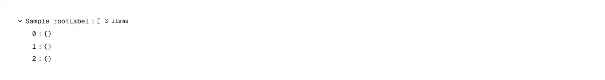

Renders a parsed JSON value as a collapsible, type-coloured tree you can read and navigate. Reach for it wherever a page has to show a payload the reader did not write: an API or REST response in an admin or debug panel, a webhook body, the payload attached to a log or audit entry, a GraphQL response, an LLM tool-call's arguments, a JSONB/JSON database column, a feature-flag or config blob, a job's input and output in a queue dashboard, or the raw record behind a row in an internal tool. Common asks it answers: "json viewer", "json tree viewer", "json inspector", "object inspector", "display JSON in React", "render an API response", "pretty print JSON component", "collapsible JSON", "expandable JSON tree", "JSON formatter component", "view webhook payload", "debug panel for API responses", "react-json-view alternative", "shadcn JSON viewer". shadcn/ui ships nothing for JSON — its accordion and collapsible are single open/closed sections that know nothing about types, counts or depth — so this is normally either a raw <pre>{JSON.stringify(data, null, 2)}</pre>, which is unreadable past a screenful and cannot be collapsed, or a third-party viewer pulled in for one panel. Pass the value itself — `data={await res.json()}` — and nothing else is required: objects and arrays open and close, strings, numbers, booleans and null are coloured by type, every container reports how many entries it holds, and `defaultExpandedDepth` sets how much is open on first paint (0 for just the root, 1 by default, Infinity for the whole document). Built for payloads that are bigger than the demo: a container draws `maxItemsPerNode` entries (100 by default) behind a keyboard-reachable “… 39,900 more” row, so a 40,000-element array costs a hundred rows rather than mounting all of them, long strings are elided inside their quotes with the full text kept on hover, and a value that points back at one of its own ancestors is drawn as [Circular] instead of unfolding forever. It is the real ARIA tree pattern rather than a stack of collapsibles: role=tree/treeitem with aria-expanded, aria-level, aria-posinset and aria-setsize, and a roving tabindex that makes the whole viewer one Tab stop instead of one per row. Up/Down walk the rows actually on screen, Right opens a container and then steps into it, Left closes it or jumps to the parent, Home/End hit the ends, Enter/Space toggle a row or ask a “… more” row for its next page. `onSelect` hands back the row's accessor path — `$.items[0].id`, quoted so that `{ "a.b": 1 }` and `{ a: { b: 1 } }` never produce the same string, and pasteable straight into code — together with the live value, which is the hook for a copy button or a “filter to this” action; pair it with copy-button for copy-on-click. Open state is stored as the difference from `defaultExpandedDepth` rather than as a set of open paths, so swapping in the next response leaves the view opened to the same depth instead of collapsing to one unreadable root row. Counts are grouped without toLocaleString, whose locale-dependent output shows up as a hydration mismatch in Next.js. Styled with shadcn tokens (foreground, muted-foreground, accent, ring) plus dark-aware type colours so it follows light and dark themes; lucide-react is the only dependency, with no Radix, no state library and no JSON parser of its own. Distinct from tree-view, which renders a hierarchy you have already built into `{ id, label, children }` nodes: this one takes the raw parsed value and needs no node-building step, and it renders keys, types and counts rather than labels. Distinct from code-block, which shows JSON as static text to copy rather than a structure to open and walk.

Rendered on the shadcn default neutral palette with harness-generated props.
pnpm dlx shadcn@4.21.0 add @pulld/json-viewer
| licence | POINTER |
|---|---|
| primitive base | none |
| type | registry:ui |
| files | src/components/ui/json-viewer.tsx |
| npm deps pulled | none beyond the pre-installed peer set |
| registry deps | — |
| semantic / palette / hex | 9 / 8 / 0 |
| writes shared ui/ | yes — can overwrite the project’s own primitives |